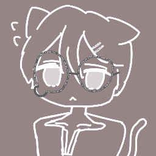

Leo
Arguably the BEST (No cap) player in the SMP as he is battle hardened and is fearless amongst a horde of mobs.
He is the warrior of the SMP that fends off mobs just so the other players can thrive inside the SMP. He also contributed alot as he mines iron and other ores. (Bro likes messing around with Croque)
Croque
The Owner of the SMP. He is the one that owns the island Tyrannical and Perhaps Lazy.
He is also known as a baker as he acquires alot of bread and food for himself (Greedy fuck).
He claims himself to be "self-sustaining" (Most likely false because he kneeled towards Leo for iron)

Yuki
Yuki is the owner of the Discord Server "Yukicord" (Named by Croque). She is a very well-known nether dweller and she really likes Minori a little too much.
Maybe a little perverted but she contributed alot towards the island, finding a huge ass cave that is so deep and vast just like her REDACTED